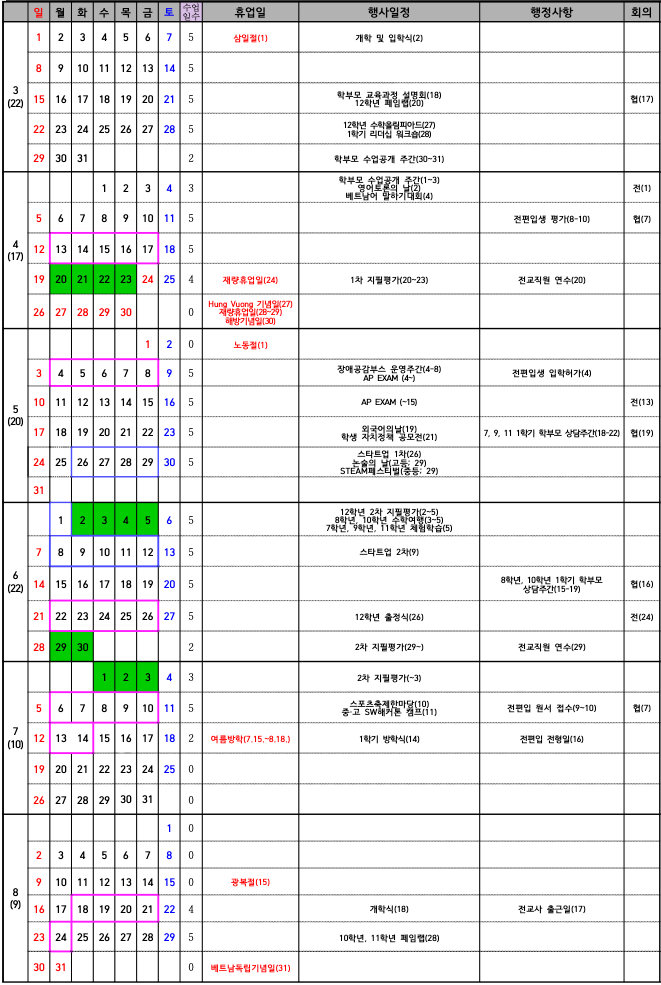
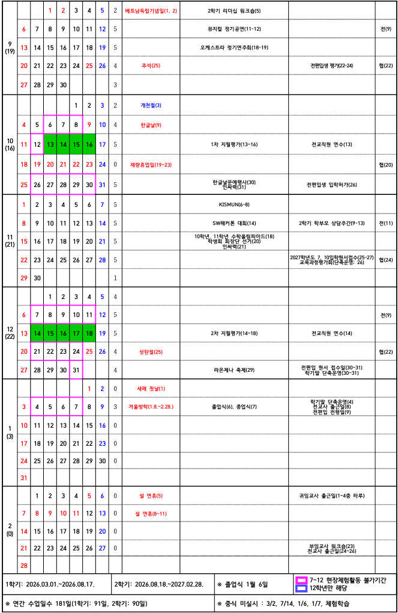

월
화
수
목
금
Made by MoonJongBae
무료로 누구나 사용할 수 있어요.
| 월~목 | 금 | ||
|---|---|---|---|
| 조 | 08:00~08:15 | 조 | 08:00~08:15 |
| 1 | 08:30~09:15 | 1 | 08:30~09:15 |
| 2 | 09:25~10:10 | 2 | 09:25~10:10 |
| 휴 | 20분 | 휴 | 15분 |
| 3 | 10:30~11:15 | 3 | 10:25~11:10 |
| 4 | 11:25~12:10 | 4 | 11:20~12:05 |
| 점 | 12:10~13:10 | 점 | 12:05~13:05 |
| 5 | 13:10~13:55 | 5 | 13:05~13:50 |
| 6 | 14:05~14:50 | 6 | 14:00~14:45 |
| 7 | 15:00~15:45 | 종 | 14:45~14:55 |
| 종 | 15:45~16:00 | 7 | 14:55~15:40 |
| 버 | 16:00 | 8 | 15:45~16:30 |
| 버 | 16:50 | ||
| 방 | 16:00~17:40 | 자 | 16:50~17:40 |
| 저 | 17:40~18:30 | 저 | 17:40~18:30 |
| 자 | 18:30~20:30 | 자 | 18:30~20:30 |
| 버 | 20:40 | 버 | 20:40 |


가이드를 불러오는 중...